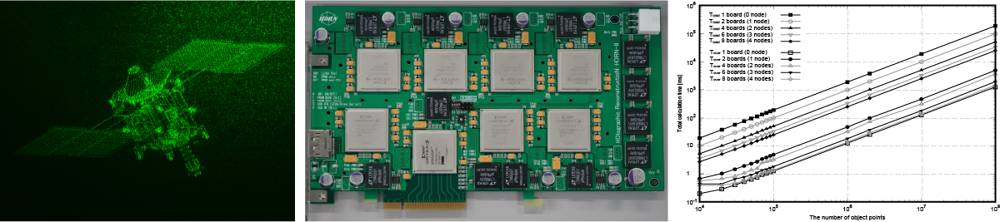

Takashige Sugie, Takanori Akamatsu, Takashi Nishitsuji, Ryuji Hirayama, Nobuyuki Masuda, Hirotaka Nakayama, Yasuyuki Ichihashi, Atsushi Shiraki, Minoru Oikawa, Naoki Takada, Yutaka Endo, Takashi Kakue, Tomoyoshi Shimobaba and Tomoyoshi Ito, Nature Electronics 1, 254–259 (2018) [Paper link].
Holography is a method of recording and reproducing three-dimensional (3D) images, and the widespread availability of computers has encouraged the development of holographic 3D screens (electroholography). However, the technology has not yet been used in practical applications because a hologram requires an enormous volume of data and modern computing power is inadequate to process this volume of data in real time. Here, we show that a special-purpose holography computing board, which uses eight large-scale field-programmable gate arrays, can be used to generate 108-pixel holograms that can be updated at a video frame rate. With our approach, we achieve a parallel operation of 4,480 hologram calculation circuits on a single board, and by clustering eight of these boards, we can increase the number of parallel calculations to 35,840. Using a 3D image composed of 7,877 points, we show that 108-pixel holograms can be updated at a video rate, thus allowing 3D movies to be projected. We also demonstrate that the system speed scales up in a linear manner as the number of parallel circuits is increased. The system operates at 0.25 GHz with an effective speed equivalent to 0.5 petaflops (1015 floating-point operations per second), matching that of a high-performance computer.